10 / 100 — 극단적 공포 · 🔥 극단 공포 = 바닥 매수권(백테스트 F&G≤25 매수 20일 +4~9%)
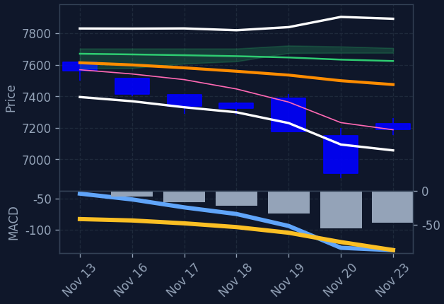
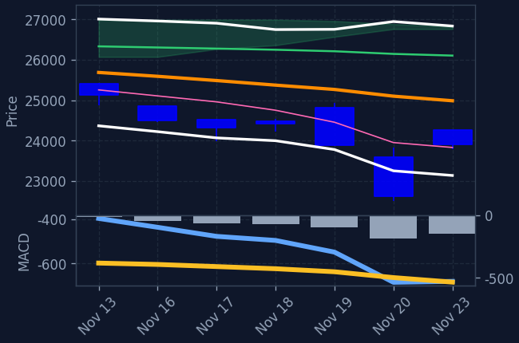
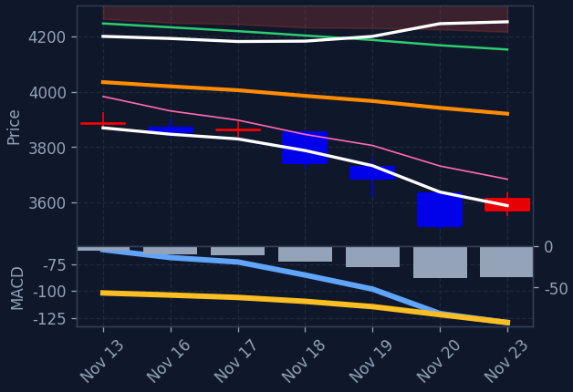
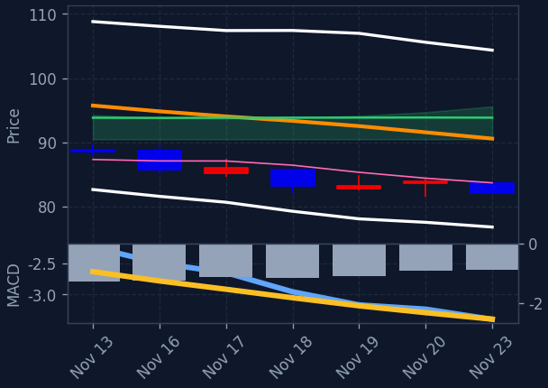
미국 프리장 시장은 최근 AI 기술주 급락 이후 매도세가 일단락되며 반도체와 IT 섹터를 중심으로 기술적 반등세를 나타내고 있습니다. S&P500 선물(+0.12%)과 나스닥 선물(+0.05%)이 소폭 상승하는 가운데, 지난주 폭락을 딛고 시장 전반이 바닥을 모색하는 분위기입니다.
직전 정규장에서는 연준 금리 관련 불확실성과 기술주의 악재로 필라델피아반도체 지수가 -10.73% 폭락하고 다우 지수가 -1.93% 하락하는 등 극심한 매도세가 이어졌습니다. 하지만 프리장에서 AI 주식 매도세가 일단 정지되고 저가 매수세가 유입되면서 엔비디아(+7.30%), 알파벳(+4.90%), 브로드컴(+4.71%) 등이 일제히 반등에 성공했습니다. 이에 반도체 3배 레버리지 ETF인 SOXL이 +14.81% 폭등하고 WTI 유가는 $82.1(-2.26%)로 하락하는 등 위험 자산 선호 심리가 부분적으로 회복되고 있습니다.
프리장에서는 반도체(+5.12%)와 기술/IT(+3.45%) 섹터가 상승을 견인하는 가운데 태양광/신재생(+3.39%), 2차전지/리튬(+3.10%), 경기소비재(+2.49%) 등 주요 성장 섹터가 전반적으로 강세를 보이고 있습니다. 테슬라(+4.19%), 메타(+3.15%), 마이크로소프트(+2.97%) 등 주요 빅테크로 매수세가 확산되는 한편, 금 선물 가격도 $3,621(+2.99%)로 상승해 안전자산 수요도 공존하는 복합적인 흐름입니다. 시장은 AI 관련주들의 반등 지속 여부와 연준의 정책 향방에 집중하며 지수 바닥권을 탐색하는 양상입니다. 이는 그간 미국 기술주 조정으로 함께 압박받았던 한국 증시의 반도체 및 2차전지 대형주 투자 심리에도 긍정적인 반등 모멘텀을 제공할 것으로 기대됩니다.
📊 나스닥 선물 +0.05%
📊 S&P500 선물 +0.12%
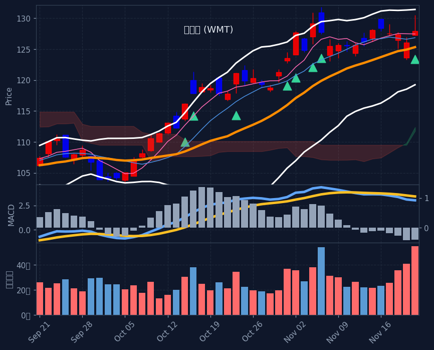
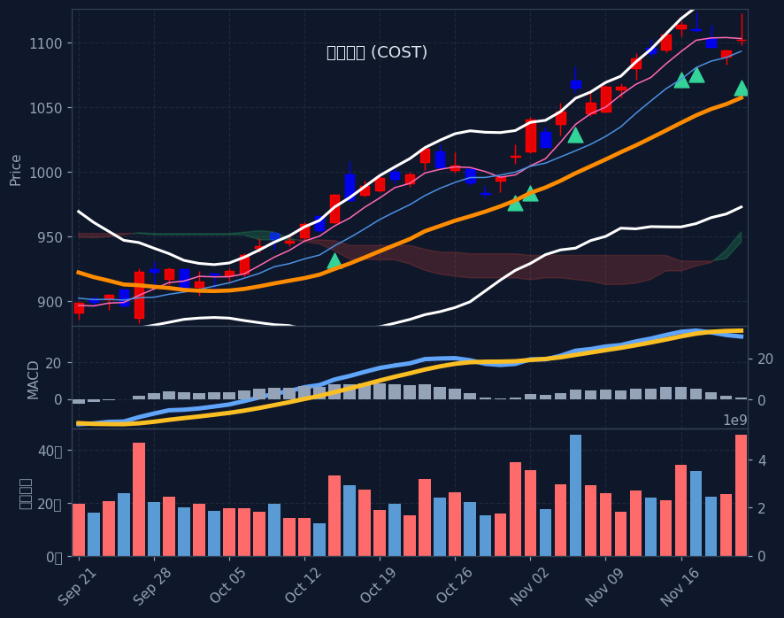
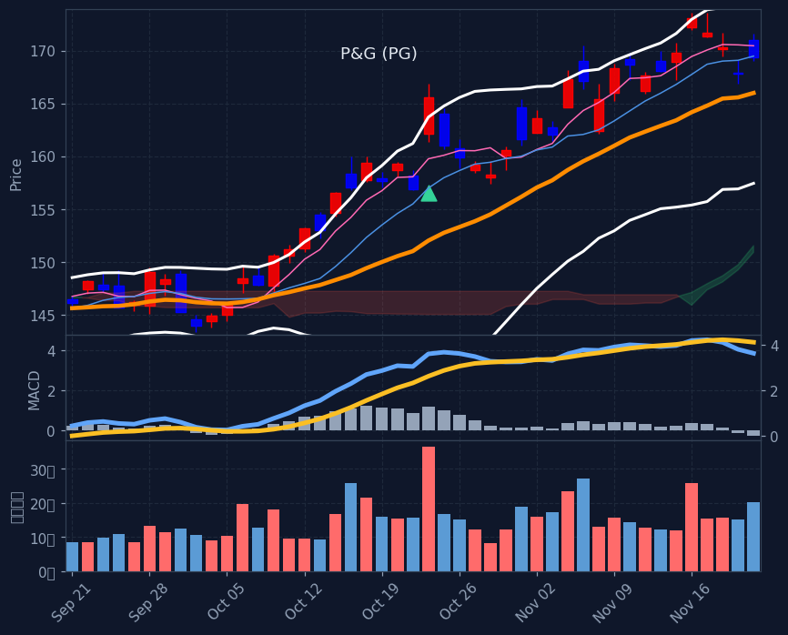
※ S&P500 대상 A/B/C/D 전략별 분류(각 칸 거래대금순). 한 종목이 여러 전략에 잡히면 각 칸에 중복 표기. 백테스트상 기계적 엣지는 약하며 매수 추천이 아닙니다. 판단·책임은 본인.
📅 결제일 11/16~11/20(5거래일) 기준 · 오늘 11/23 기준 약 3일 전 데이터 · T+2 결제 기준(실제 매매는 약 2거래일 전)
💸 한국인 순매수 일평균: +5,354억 (전주 +4,932억 대비 +8.6%) · 5일 총액 +26,768억
※ 예탁결제원(SEIBro) 최근 5거래일 한국인 순매수/순매도 결제금액(T+2) · 11/16~11/20 결제 기준(실제 매매는 약 2거래일 전). 자금이 어디로 유입·유출되는지 참고용.
현재 E(투매 바닥) 신호 없음 — 시장이 바닥권(지수 RSI·공포탐욕 극단)이 아닐 땐 비어있는 게 정상입니다.
※ 투매 바닥(RSI≤30+50선이격+거래량폭증)에서 반등 시작 포착, 4시간봉 RSI도 과매도. 🔥는 지수(나스닥/S&P·코스피)도 RSI<35 동반 바닥(강신호). 떨어지는 칼날 위험 — 매수 추천 아님, 판단·책임 본인.
오늘 60일선 지지 마감 종목 없음 — 60일선까지 눌렸다 지지받고 마감한 종목이 있을 때만 표시됩니다(참고용).
※ 60일선까지 눌렸다 지지받고 마감한 종목(참고 태그). 백테스트상 다음날 반등 엣지 없음(승률 48~49%·생존편향 포함) 확인됨 — 매수 추천·시그널 아님, 종합점수/Top3에도 미반영. 단순 참고용.
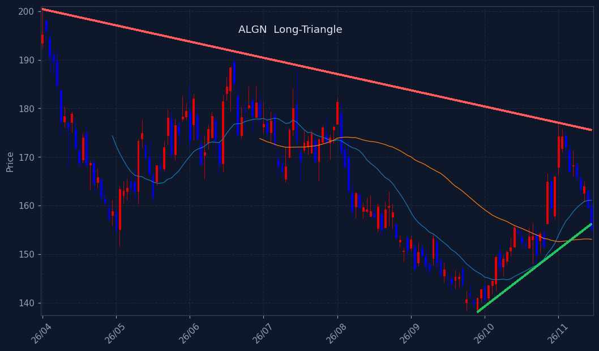
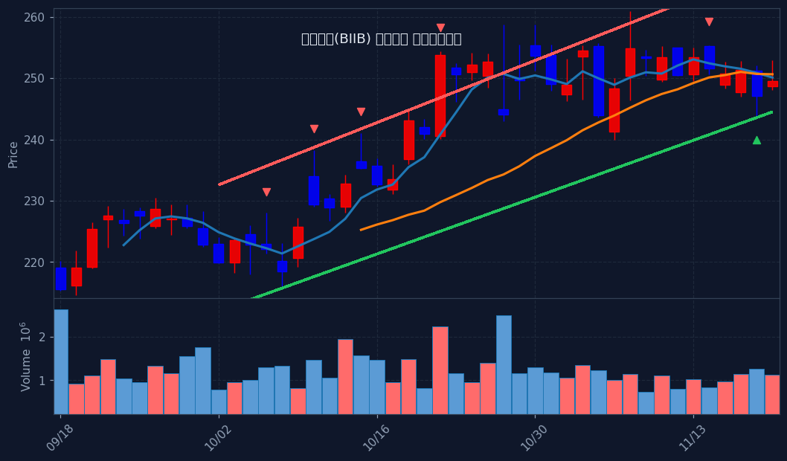
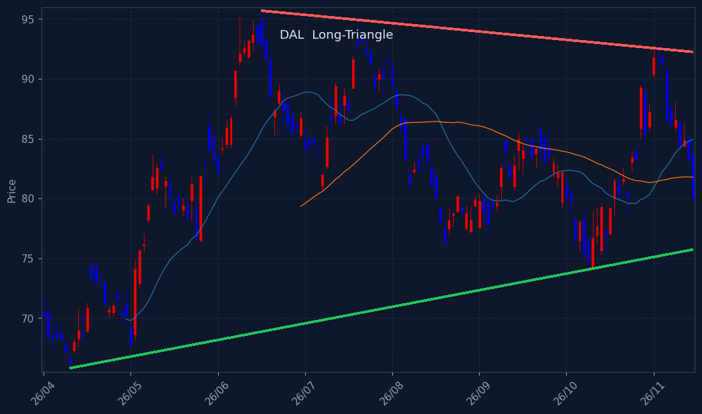
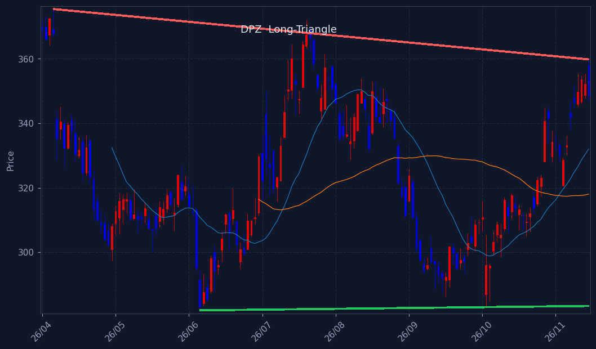
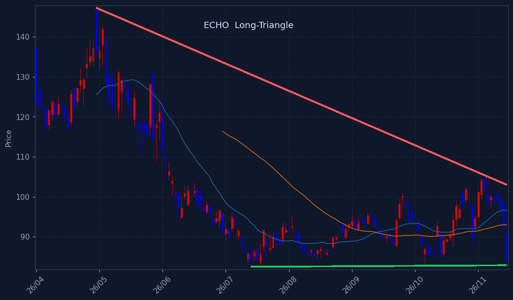
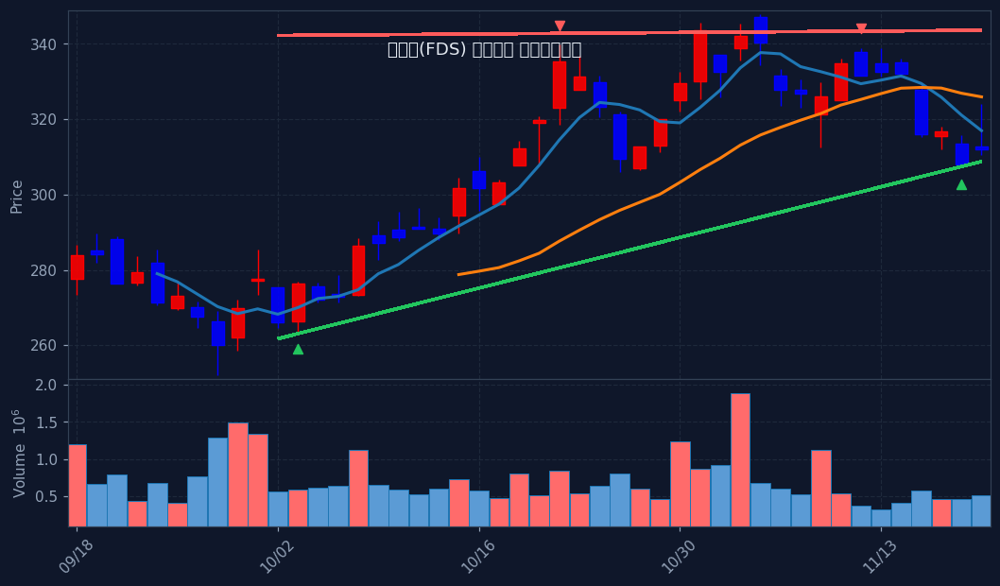
※ 삼각수렴 돌파 임박 종목. 📐장기 삼각수렴(수개월 대형 삼각형, 볼록껍질 추세선+실수축) = 백테스트 491건 승률 66%·평균 +8.7%/20일로 엣지 확인(HOOD·TSLA류 대박 초입). 단기 코일 = 엣지 약함(승률 ~60% 베타 수준). 🔻대칭=고점↓·저점↑ / 🟰바닥지지=저점 평평. 매수추천 아님·종합점수/Top3 미반영(관찰용).